我们来看看运行线性回归的梯度下降时会发生什么。00:02
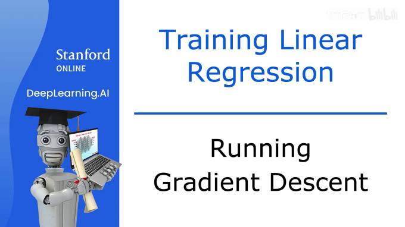
让我们看一下这个算法的实际效果。00:08
左上角是模型和数据的图，右上角是代价函数的等高线图。00:11
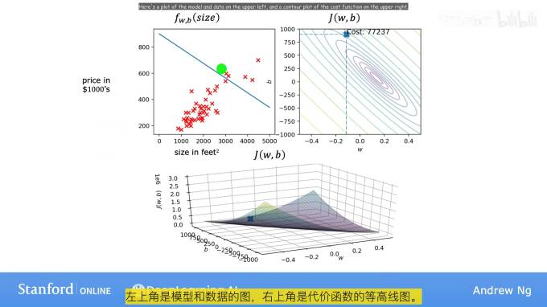
底部则是同一个代价函数的曲面图。00:21
通常 w 和 b 都会初始化为零，但在这个演示中，我们将 w 初始化为负零点一，b 初始化为九百。00:25
这对应于 f 括号 x 等于负零点一 x 加九百。00:38
现在，如果我们用梯度下降走一步，最终会从代价函数的这个点出发，来到这个点，也就是向右下方移动。00:47
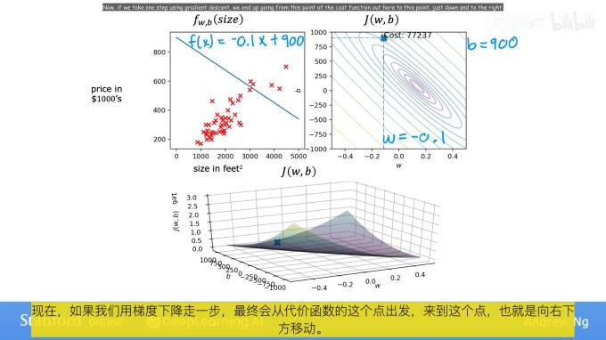
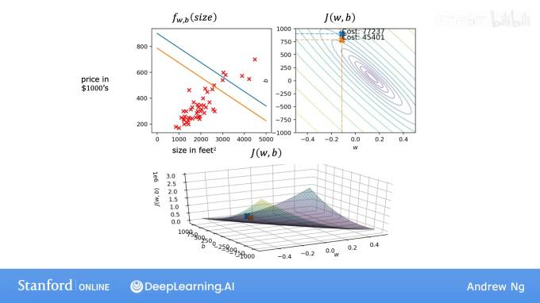
请注意，这条拟合直线也发生了一点变化。01:00
代价函数现在移动到了这第三个点，同样，函数 f 括号 x 也再次发生了变化。01:09
当你进行更多步时，代价在每次更新时都在降低。01:18
所以参数 w 和 b 正沿着这条轨迹移动。01:24
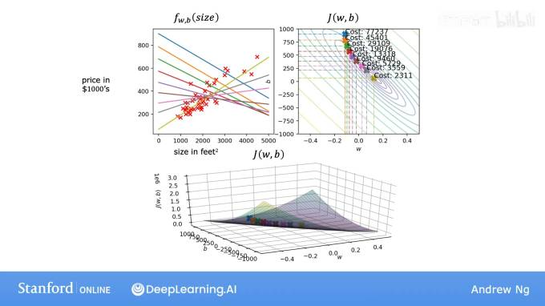
如果你看左边，你会得到这条相应的拟合直线，它越来越贴合数据，直到我们到达全局最小值。01:30
全局最小值对应了这条拟合直线，它相当好地拟合了数据。01:43
我们将用它来为房价数据拟合一个模型。01:55
现在，你可以使用这个 f 括号 x 模型来预测你客户或任何其他人的房价了。02:01
举例来说，如果你朋友的房子面积是一千二百五十平方英尺，你现在可以读出这个值，并预测他们也许能卖个，我不知道，比如二十五万美元。02:10
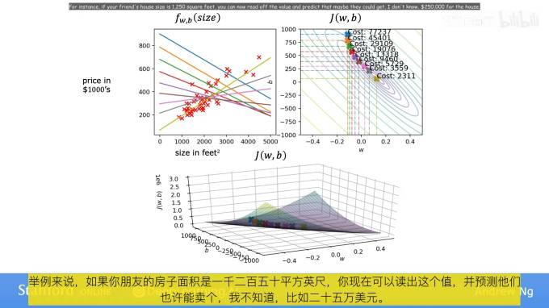
更精确地说，这种梯度下降过程被称为批量梯度下降。02:24
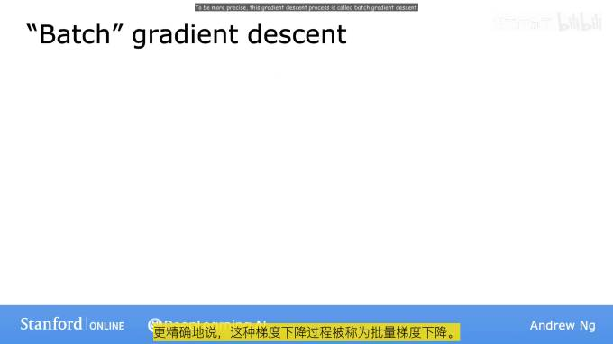
“批量梯度下降”这个术语指的是，在梯度下降的每一步，我们都会查看所有的训练样本，而不是训练数据的个子集。02:30
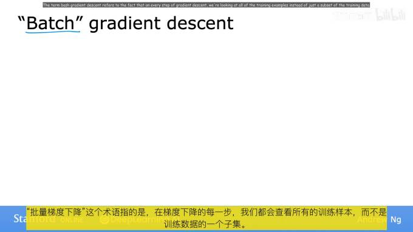
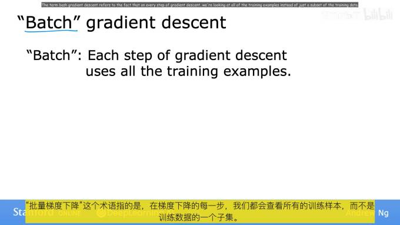
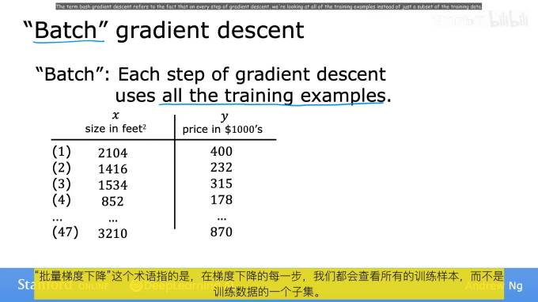
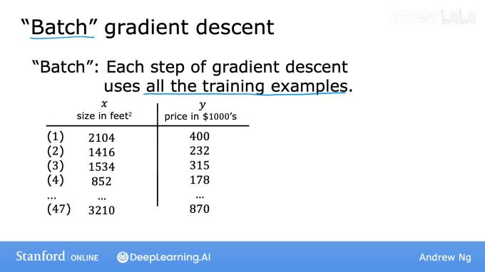
所以在计算梯度下降、计算导数时，我们是在算从 i 等于一到 m 的总和。02:44
批量梯度下降在每次更新时，都是在查看整个批次的训练样本。02:54
我知道“批量梯度下降”这个名字可能不是最直观的，但机器学习领域的人们就是这么称呼它的。03:02
如果你听说过 deeplearning.ai 出版的《The Batch》通讯，这份通讯《The Batch》也正是以机器学习中的这个概念命名的。N。03:11
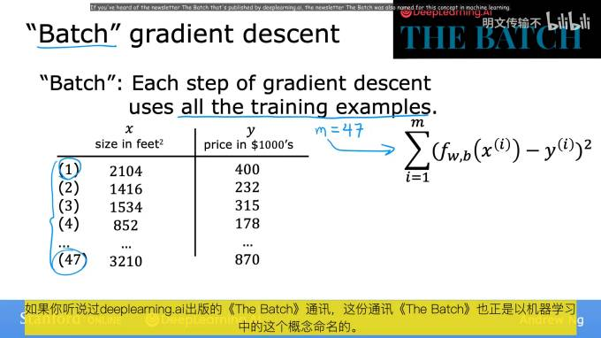
另外，事实证明，还有其他版本的梯度下降，它们并不查看整个训练集，而是每次更新时只看训练数据中更小的子集。03:23
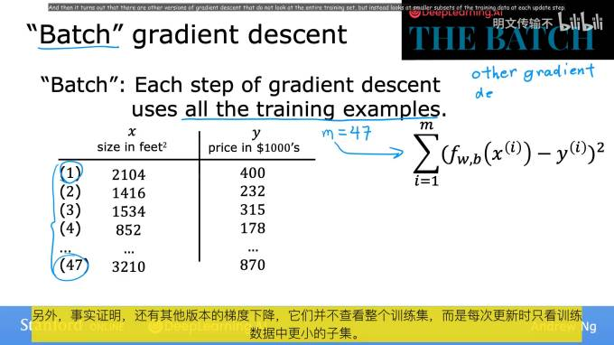
但对于线性回归，我们将使用批量梯度下降。03:35
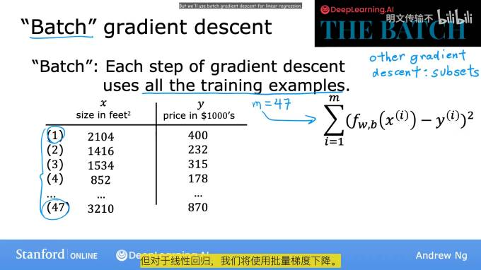
以上就是线性回归的内容了。03:40
恭喜你完成了你的第一个机器学习模型。03:43
我希望你去庆祝一下，或者，我也不知道，也许在你的吊床上小憩片刻。03:47
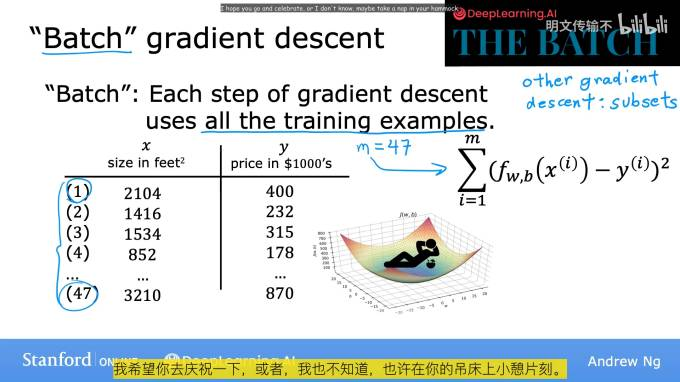
在这期视频之后的可选实验中，你将看到对梯度下降算法的回顾，以及如何用代码实现它。03:56
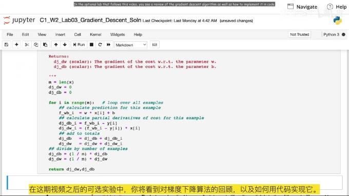
你还会看到一张图，展示随着你进行更多次迭代训练，代价是如何下降的。04:05
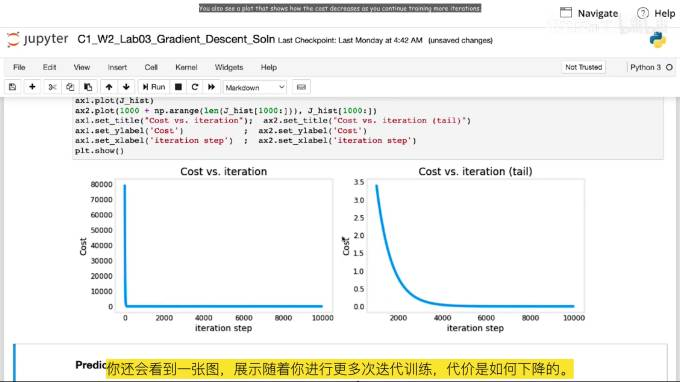
你还会看到一张等高线图，展示当梯度下降为参数 w 和 b 找到越来越好的值时，代价是如何越来越接近全局最小值的。04:13
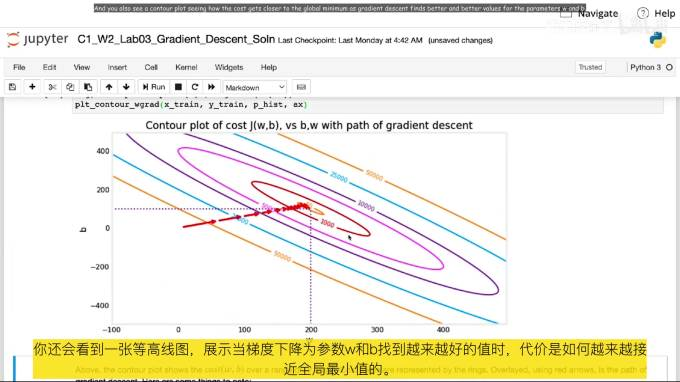
记住，要完成这个可选实验，你只需要阅读并运行这段代码。04:25
你不需要自己编写任何代码。04:32
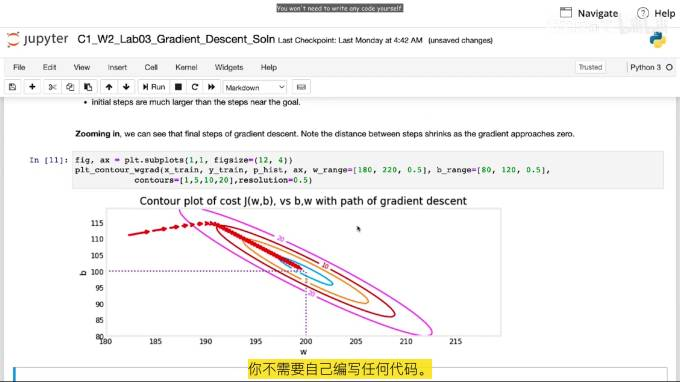
我希望你花点时间来做一下，也熟悉一下梯度下降的代码，因为这将帮助你日后自己实现这个算法以及类似的算法。04:35
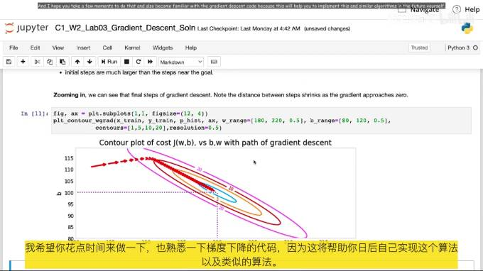
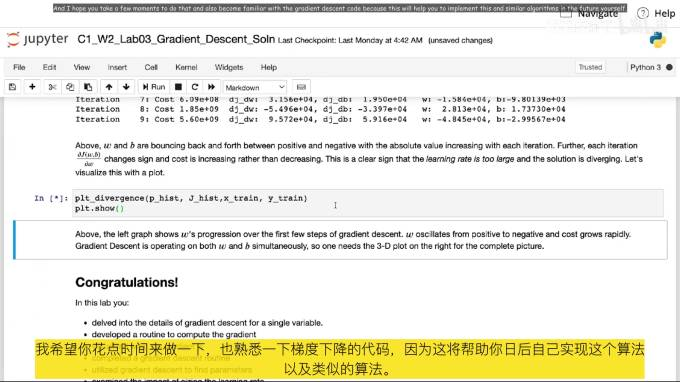
感谢你陪伴我直到第一周这最后一期视频的结尾，也祝贺你一路坚持到了这里。04:49
你正走在成为一名机器学习从业者的路上。04:57
除了可选的实验，如果你还没有做的话，我也希望你去看看练习测验，这是你检验自己对概念理解程度的好方法。05:02
如果第一次没有全对也完全没关系。05:13
你也可以多次参加测验，直到拿到你想要的分数。05:17
现在你已经知道如何实现单变量线性回归了。05:23
那么本周的内容到此就结束了。05:27
下周，我们将学习如何让线性回归变得更加强大。05:31
你将不再局限于像房屋面积这样的单一特征，而是学会如何让它处理许多特征。05:35
你还将学习如何让它拟合非线性的曲线。05:44
这些改进将使算法变得更加实用和有价值。05:49
最后，我们还会介绍一些实用技巧，这些技巧对于让线性回归在实际应用中真正发挥作用会很有帮助。05:53
非常高兴你能和我一起在这门课里，期待下周见到你。06:04